Choose a section to jump to its instructions. Screens and actions vary by role.
Audience: Administrators, Supervisors, and Employees
Application: Employee Shift Planner (Shiftly)
Guide version: 1.1 — October 6, 2026
1. What Shiftly does
Shiftly helps a team create weekly schedules, manage employees and availability, review leave and shift-swap requests, track attendance, publish schedules, and monitor coverage and labour cost.
Role
Main capabilities
Administrator
All Supervisor capabilities, plus user access and organization settings
Supervisor
Employees, availability, schedules, approvals, operations, and reports
Employee
Own published schedule, availability, time off, swaps, and notifications
2. Sign in
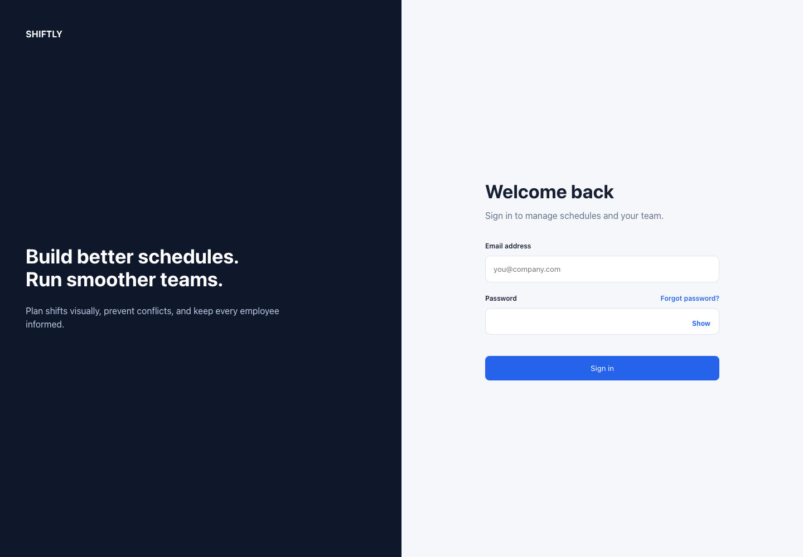
Shiftly sign-in screen · Fictional demonstration data
Open the Shiftly web address supplied by your organization.
Enter your work email address.
Enter your password.
Select Sign in.
If you cannot remember your password, select Forgot password? and follow the emailed reset link.
After sign-in, managers land on Weekly Schedule. Employees land on My schedule.
3. Understand the navigation
Use the left menu to move between work areas:
Schedule: Build, review, and publish a weekly schedule.
Employees: Add employees and maintain their work details.
Availability: Record when employees can work.
Time off: Submit and approve leave requests.
Operations: Review swaps, attendance, and audit history.
Reports: Review coverage, scheduled hours, overtime, and forecast cost.
Notifications: Choose alerts and review delivery history.
Settings: Maintain organization, positions, staffing, holidays, and user access.
Select Log out when you finish using a shared computer.
4. Add and maintain employees
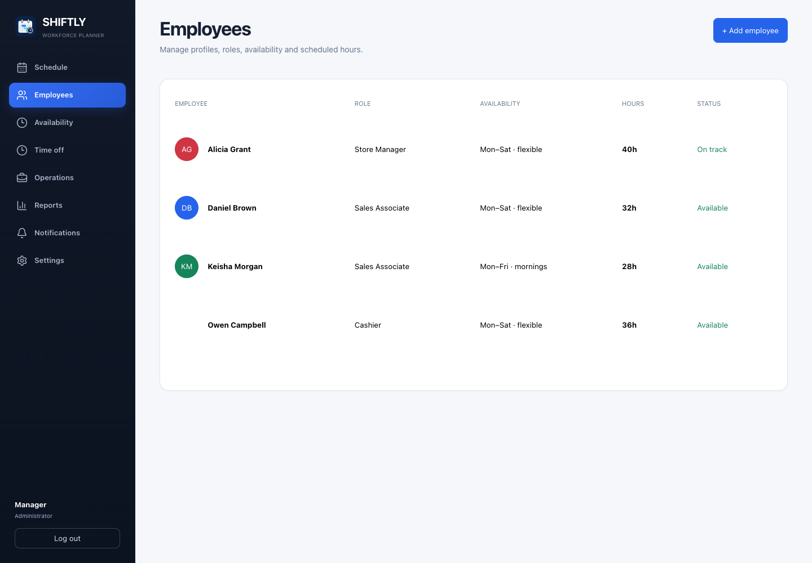
Employees directory · Fictional demonstration data
Add an employee
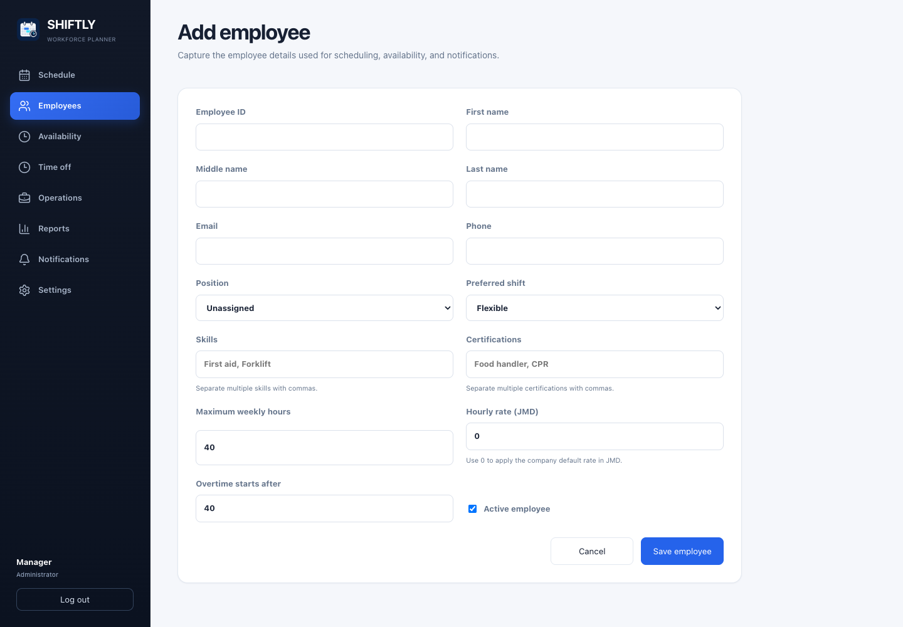
Add employee form · Fictional demonstration data
Select Employees.
Select + Add employee.
Enter the employee ID, name, and contact details.
Choose a position and, if applicable, a preferred shift.
Add skills or certifications when they affect shift eligibility.
Enter maximum weekly hours, hourly rate, and overtime threshold.
Leave Active enabled for a current employee.
Select Save employee.
Edit an employee
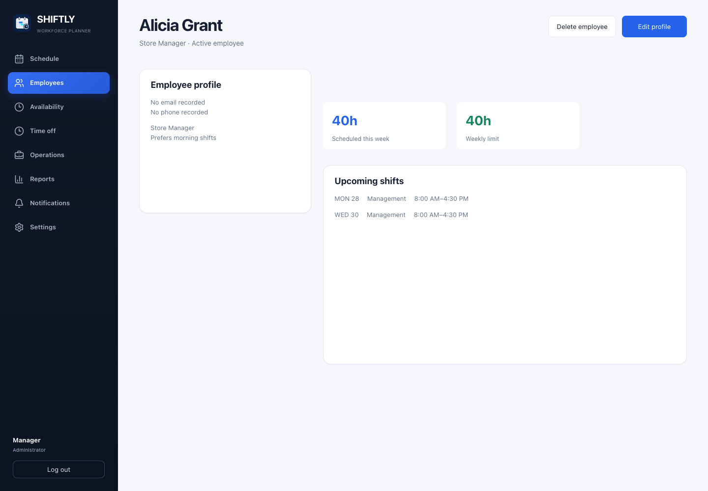
Employee profile and actions · Fictional demonstration data
Select Employees.
Select the employee’s row.
Review the profile, weekly load, and upcoming shifts.
Select Edit profile.
Make the changes and save.
Delete an employee
Select Employees and open the employee’s profile.
Select Delete employee.
Review the confirmation and confirm only if the employee should be removed.
After deletion, Shiftly returns to the employee directory.
Deletion removes the employee from the directory and prevents new shift assignments. Existing shifts and historical records are preserved. If deletion fails, the profile shows an error; check the message before trying again.
Good practice
Use a unique employee ID for every person.
Assign the correct position before scheduling.
Keep hourly rates and overtime thresholds current so report forecasts remain useful.
Mark former employees inactive instead of reusing their record.
5. Record availability
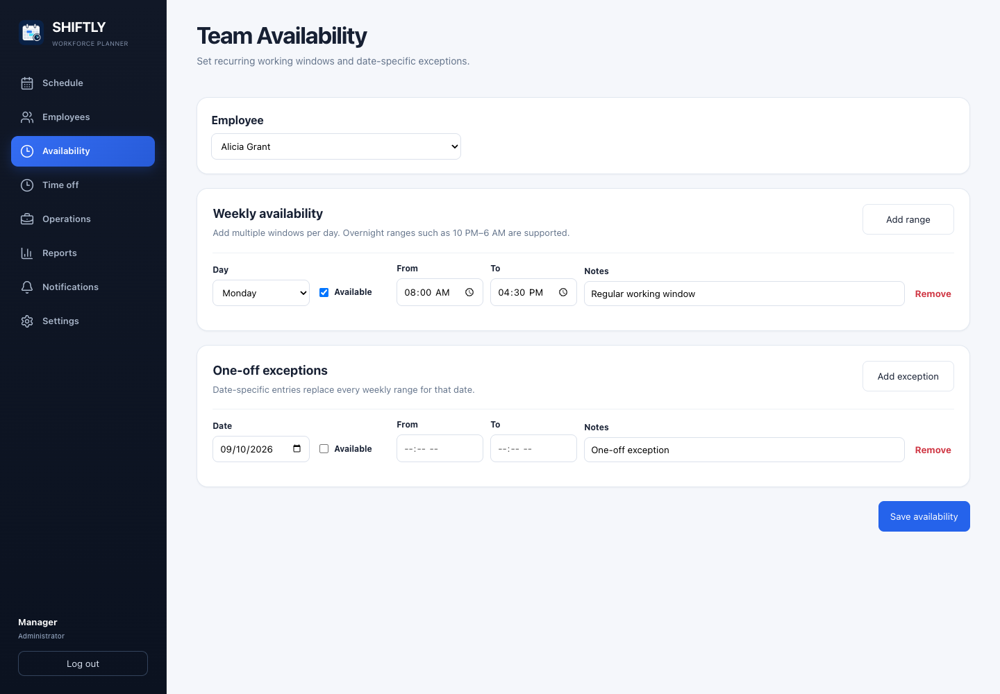
Weekly availability and one-off exceptions · Fictional demonstration data
Weekly availability
Select Availability.
Managers choose the employee; employees see their own availability.
Select Add range.
Choose the day and leave Available checked to enter From and To times.
Clear Available to mark the day unavailable; time fields are disabled for unavailable entries.
Add more ranges as needed.
Select Save availability.
You can add multiple windows per day, including overnight ranges such as 10 PM–6 AM. With no weekly restrictions, all times are treated as available.
One-off exceptions
In One-off exceptions, select Add exception.
Choose the date.
Leave Available unchecked for an unavailable date, or check it and enter From and To times for an available window.
Add optional notes, then select Save availability.
Date-specific entries replace every weekly range for that date. Use Remove to delete an unwanted range or exception, then save. Use Time off for leave that requires approval.
6. Review time-off requests
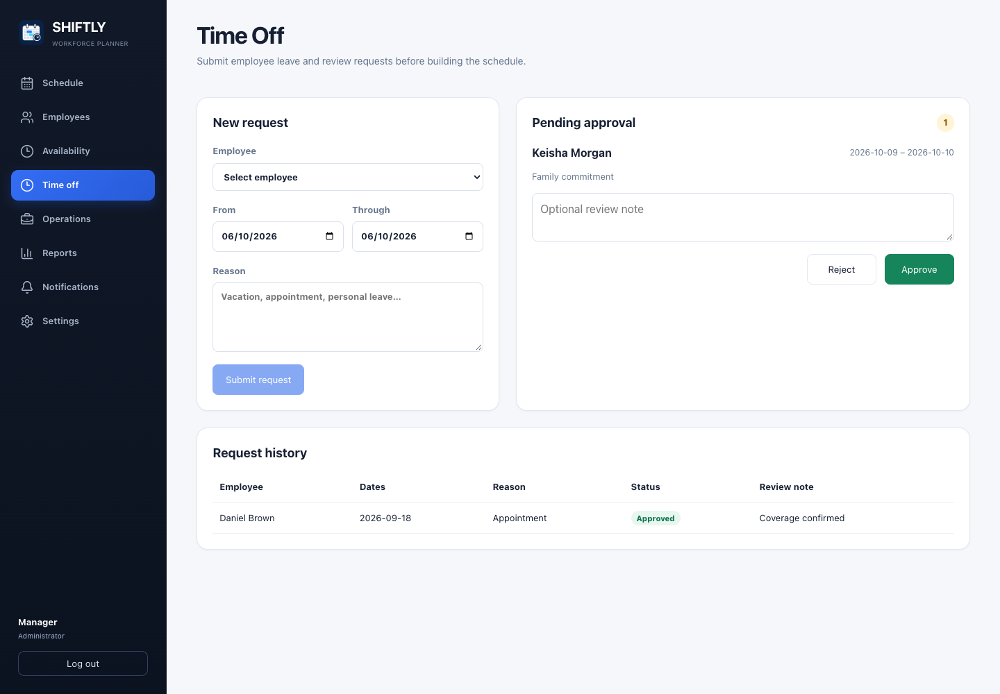
Time-off request and approval screen · Fictional demonstration data
Submit a request
Select Time off.
Managers choose an employee; employees submit for themselves.
Select the first and last date.
Enter a reason.
Select Submit request.
Approve or reject a request
Open Time off.
Find the request under Pending approval.
Add an optional review note.
Select Approve or Reject.
Confirm the result in Request history.
Review time off before building or publishing the affected week.
7. Build the weekly schedule
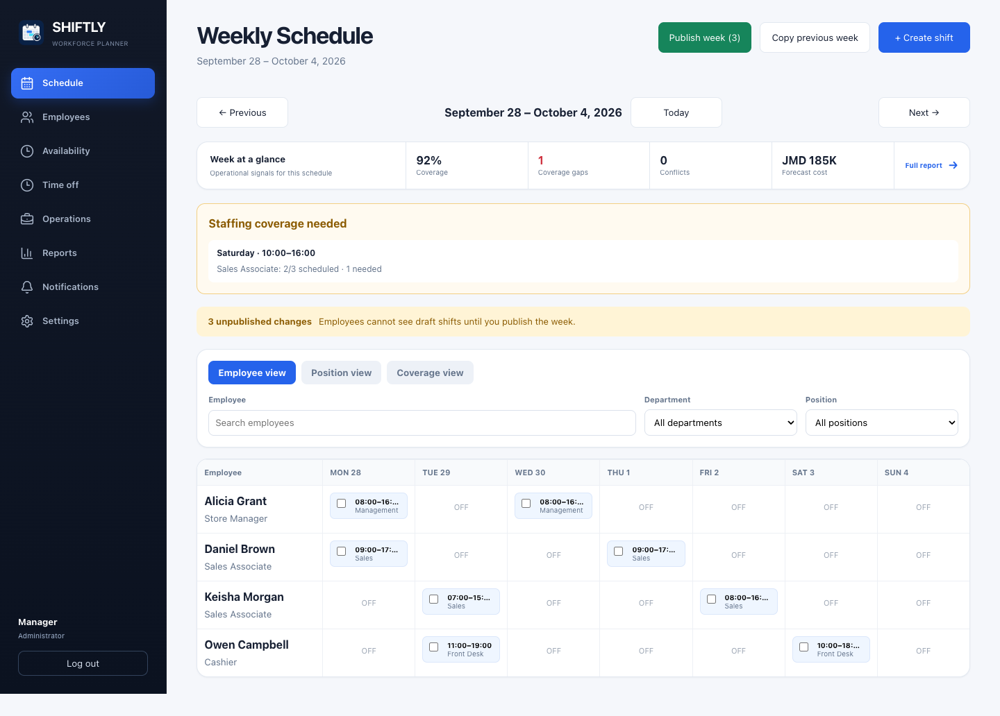
Weekly schedule planner · Fictional demonstration data
Choose a week
Select Schedule.
Use Previous and Next to change weeks.
Select Today to return to the current week when viewing another week.
Read the week-at-a-glance panel
Before editing, review:
Coverage: percentage of staffing needs filled.
Coverage gaps: periods below the staffing requirement.
Conflicts: blocking assignment or labour-rule issues.
Forecast cost: estimated regular and overtime labour cost.
Create a shift
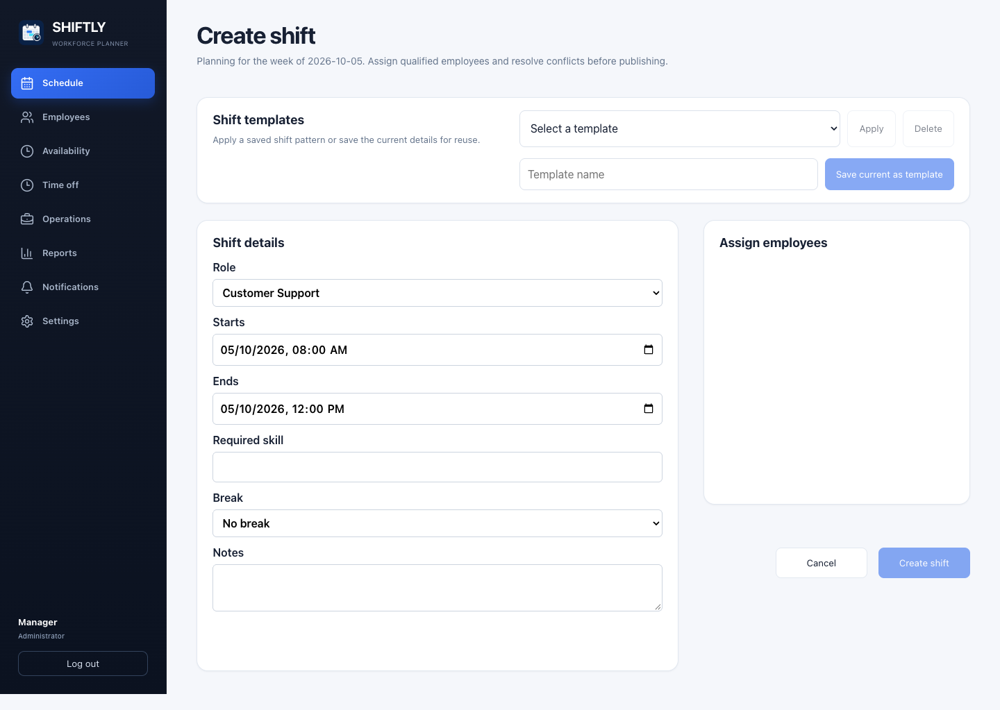
Create a draft shift · Fictional demonstration data
Select + Create shift.
Choose the employee.
Set the date, start time, and end time.
Enter the role or department.
Set the break duration.
Add a required skill if applicable.
Review candidate warnings or conflicts.
Select Create shift. New shifts remain drafts until the week is published.
Edit or cancel a shift
Select a shift card in the planner.
Update the assignment, time, role, skill, or break.
Save the change, or select the cancellation action if the shift should be removed.
Copy a previous week
Open the target week.
Select Copy previous week.
Confirm the prompt.
Review copied drafts and any skipped conflicts.
Use bulk actions
Select the checkboxes on one or more shift cards.
Use the bulk toolbar to update role, required skill, or break duration.
Use Duplicate when repeating selected shifts.
With one shift selected, choose an eligible employee and use Fill open shift.
Use Undo immediately if the last bulk change was incorrect.
Check different schedule views
Employee view: shows the week by employee.
Position view: groups shifts by role or department.
Coverage view: compares scheduled staffing against requirements by hour.
8. Publish a schedule
Resolve every item in Schedule readiness.
Review coverage warnings and time-off approvals.
Confirm shift times, roles, employees, and breaks.
Review the forecast labour cost.
Select Publish week.
Confirm that the status changes to Week published.
Draft shifts are hidden from employees. Publishing makes the current shifts visible in employee schedules and may trigger configured notifications.
9. Handle daily operations
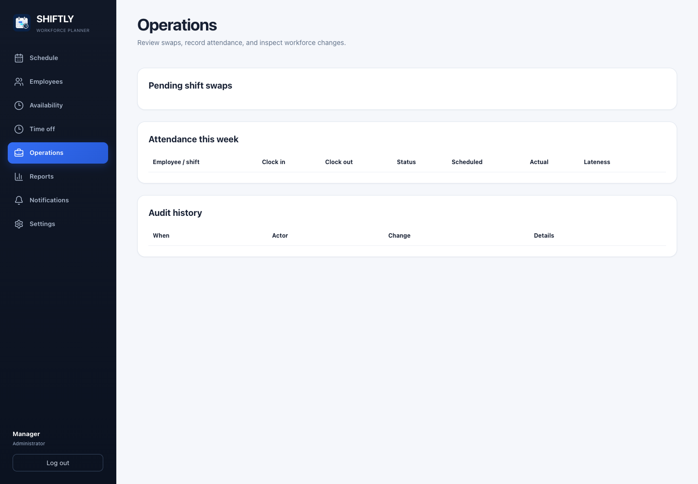
Shift swaps, attendance and audit history · Fictional demonstration data
Select Operations.
Use the Shift swaps area to review employee swap requests.
Confirm that the proposed employee is eligible and does not create a conflict.
Approve or reject the request.
Use Attendance to record actual clock-in and clock-out times.
Use Audit history to review important scheduling and approval changes.
10. Review reports and export results
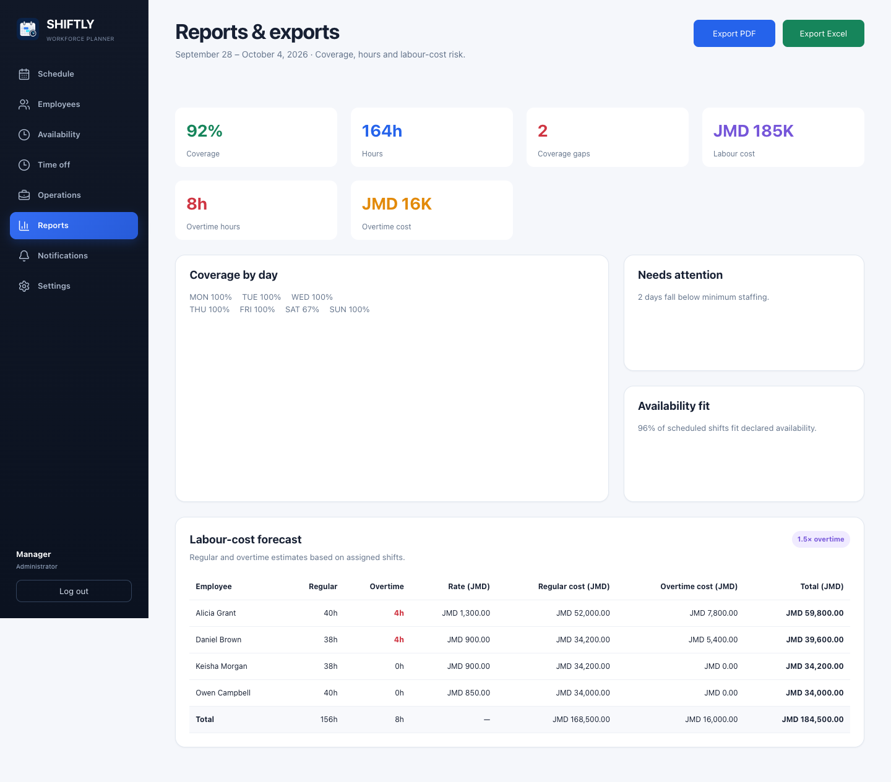
Weekly reports and labour-cost forecast · Fictional demonstration data
Select Reports.
Review coverage, total hours, coverage gaps, labour cost, overtime hours, and overtime cost.
Check Needs attention for under-staffed days.
Review Availability fit to identify assignments outside declared availability.
Review the employee-level labour-cost table.
Select Export PDF to open the browser’s print dialog, then choose a printer or save as PDF.
Select Export Excel to download the report as a spreadsheet-compatible CSV file.
11. Configure notifications
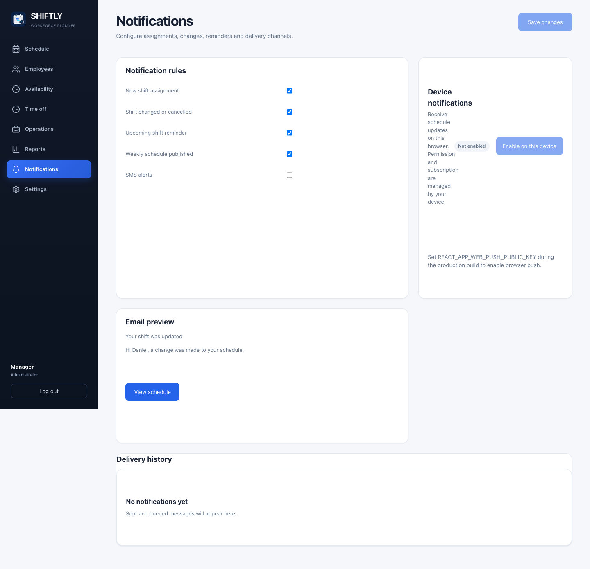
Notification preferences and delivery history · Fictional demonstration data
Select Notifications.
Choose which schedule and request updates should generate alerts.
Save the preferences.
To receive browser notifications, select the browser-push option and allow notifications when prompted.
Review delivery history if an expected message does not arrive.
Browser push requires permission and, outside local development, a secure HTTPS connection.
12. Employee quick start
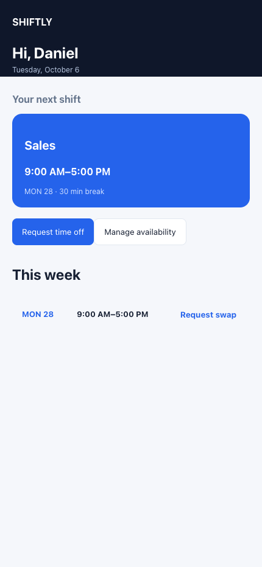
Employee published schedule · Fictional demonstration data
Sign in and open My schedule.
Review published shifts and shift details.
Open Availability to maintain recurring work times.
Open Time off to submit a dated leave request.
Open Operations to request an eligible shift swap.
Open Notifications to choose alerts.
If a manager says a shift was added but it is not visible, ask whether the week was published.
13. Administrator setup checklist
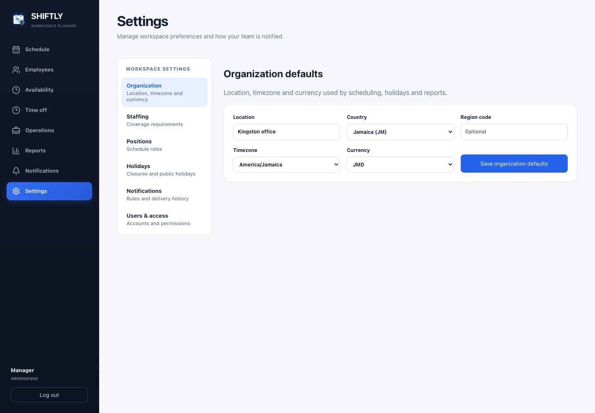
Organization settings · Fictional demonstration data
Complete these items before managers build the first live schedule:
In Settings, confirm the location, country, time zone, and currency.
Create the positions used by the organization.
Define minimum staffing requirements.
Import or add holidays and set their scheduling policy.
Create user accounts and assign the correct role.
Link each employee user account to the matching employee profile.
Add employee rates, limits, skills, certifications, and availability.
Test sign-in using one manager account and one employee account.
14. Troubleshooting
Problem
What to do
Sign-in fails
Check the email and password. Use Forgot password? or contact an Administrator.
Access changed but the menu did not
Log out and sign in again to refresh the session.
Shift cannot be assigned
Review availability, overlapping shifts, time off, maximum hours, skills, and holiday rules.
Publish button is disabled
Resolve readiness conflicts and confirm there is at least one draft change.
Employee cannot see a new shift
Confirm the week was published and the employee is viewing the correct week.
Employee has no linked profile
Ask an Administrator to link the user account to the correct employee profile in Settings. Matching email addresses alone do not link accounts.
Employee disappeared from the directory
Ask a manager whether the profile was marked inactive or deleted. Deleted employees cannot receive new assignments; existing shifts and history remain.
Report does not match the planner
Refresh the page and confirm that schedule edits were saved.
Browser notifications do not work
Allow browser notifications, use HTTPS, and check notification preferences.
15. Recommended demo video
Create one 6-minute manager workflow video at 1080p, plus a separate 90-second employee quick-start video. Short role-specific videos are easier to update and prevent employees from sitting through administrator-only setup.